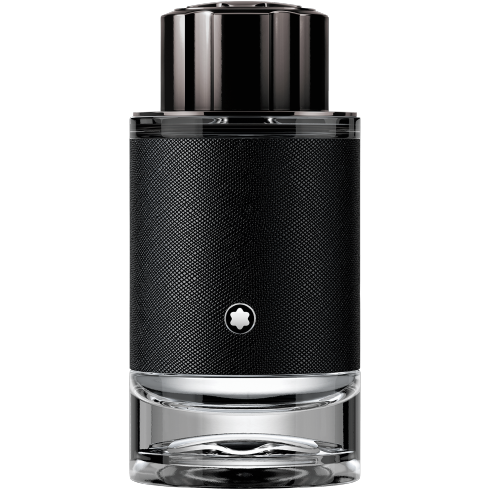

MONTBLANC Explorer Ode Perfume

A special perfume that reveals a charismatic, tough charm that craves adventure and freedom, like an explorer who travels around the world. Special Fragrance Collection
The scent of the Mont Blanc Fragrance collection emphasizes a unique personality. It's a high-quality essence that clearly conveys noble values in a sophisticated style by mixing unique ingredients. Spray an appropriate amount to areas where the pulse is beating (wrist, back of the ear) and where the collar crosses. Use it only for external use, be careful not to get into your eyes, and stop using it in case of trouble.In the case of perfume products, if they touch accessories, white clothes, or silk clothes, they may be discolored/damaged, so avoid spraying them.• Precautions for use *1. Use cosmetics for any of the following abnormalities. Consult a dermatologist, etc.) Do not use red spots, swelling, itching, irritation, etc.) 2. Do not use in areas with wounds or wetting. 3) Keep in mind)
*These contents were used on the website of each product.*